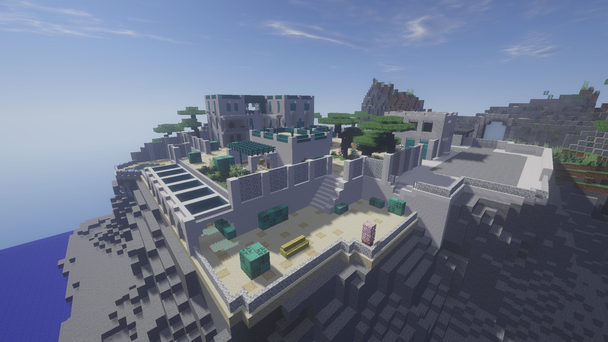
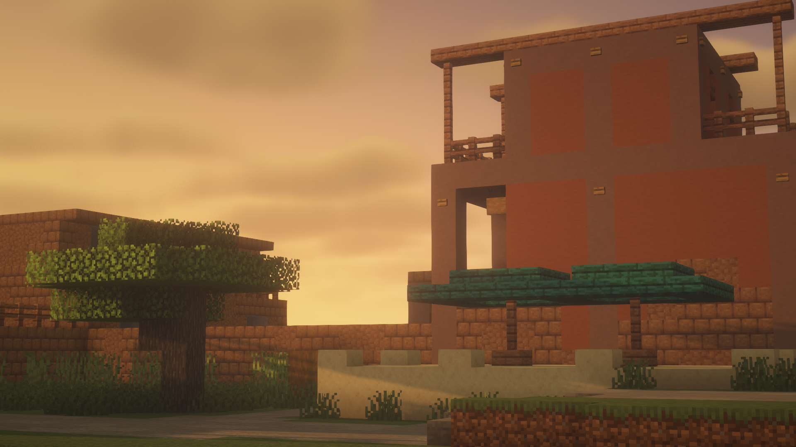
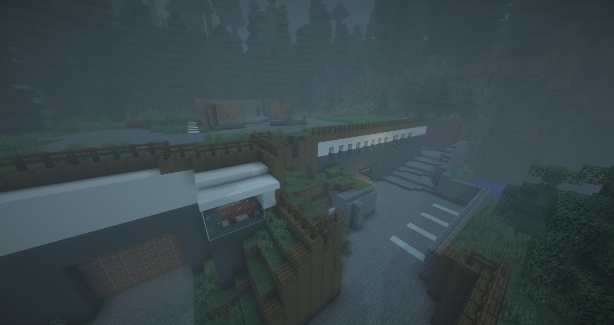
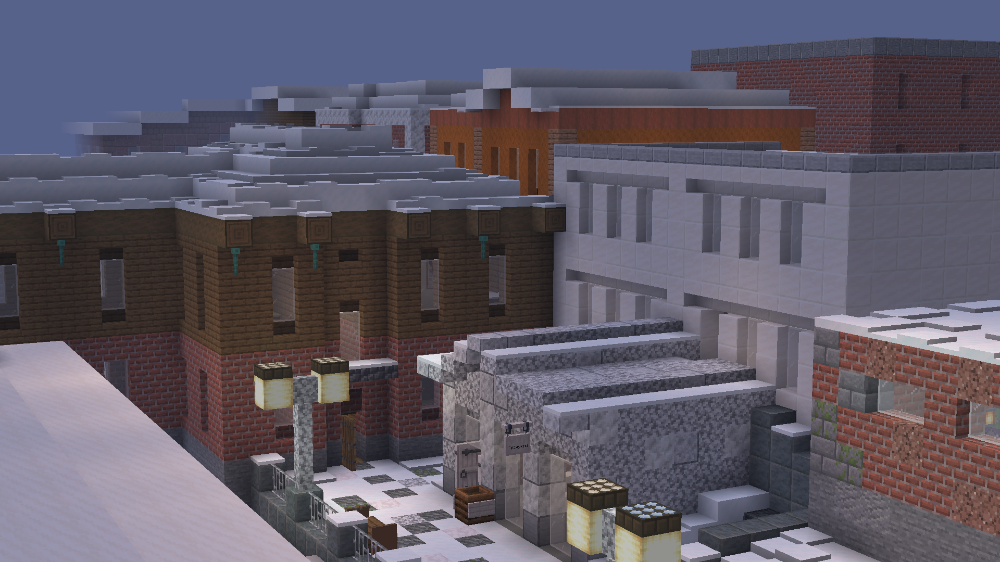

Главная
Классы
Карты
История
Карты
Карты — это разные игровые локации , внутри которых проходит игра и за пределы которых нельзя выйти.
Вилла

Действия происходят на Вилле, расположенной на скале на берегу моря. Карта, признаюсь честно, была взята из игры Warface. Мне тогда было лень придумывать карту, уже просто хотелось играть.
Это самая первая карта в Призраке (2025), вышла в марте 2025 года. На данный момент, карта не потерпела сильных изменений с 2025 года. На карте находится сама вилла, ее территория и мелкие построения, такие как гаражи. Также есть небольшой подвал. На карте есть большие открытые места. Так что карта хороша для классов которые связаны с расстоянием, например Отброс или Призрак с Арбалетом.
Район

Действия происходят в поселении, расположенном в Саванне. Карта окружена холмами из терракоты, а с одной стороны проходит река, вокруг поселения растут акации. Стоит жара, которая уже спадает из-за позднего времени.
Это вторая карта в Призраке (2025), вышла в феврале 2026 года. Карта за полтора месяца успела сильно измениться. Часть карты была удалена, взамен появились новые помещения, такие как магазин и квартира. Так же на карте есть рынок, дома и другие постройки. Карта тоже более менее открытая, но как мне кажется, поменьше чем на Вилле.
Предприятие

Действия происходят в тайге, на неизвестном предприятии. Предприятие находится под землей, через реку находится город, а само предприятие окружено большими елями. Погода стоит пасмурная.
Это третья карта в Призраке (2025), вышла в феврале 2026 года. Карта построена слоями, то есть, этажами. Люди появляются на самом верхнем слое (поверхность), а призрак в самом низу. Благодаря этому, локация стала меньше в ширь, но выше. На карте много офисов, есть склад, помещения охраны, комнаты отдыха, ресепшн и большая труба, соединяющая все этажи. На карте почти нет открытых участков.
Пригород

Действия происходят в отшибах города, в сезон зимы. Город заметен снегом, а пригород в еще более плохом состоянии: место было заброшено. Стекла побиты, в некоторых местах стены сломаны.
Это четвёртая карта в Призраке (2025), вышла в марте 2026 года. На карте есть Библиотека, Продуктовый магазин и дома с квартирами. На карта почти нет открытых мест, ближники тут эффективнее.
Классно, да?
IP: ebenamyxa.aternos.me:55588